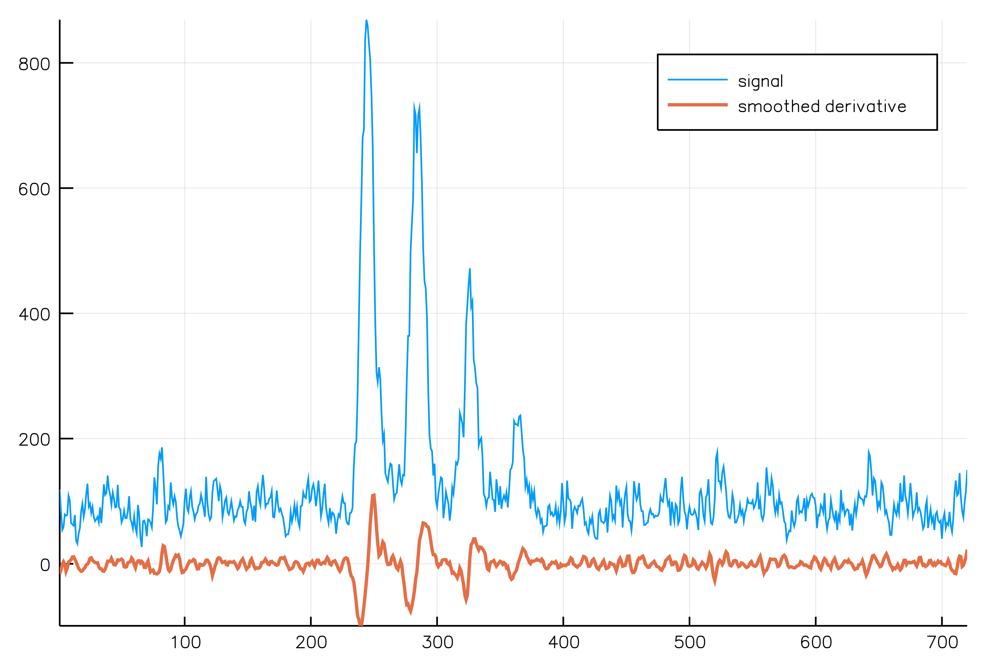

Direct Convolution Package
Table of Contents
1 Introduction
Under construction do not use!
This package goal is to compute convolution products
\begin{equation} \label{eq:main} \gamma[k]=\sum\limits_{i\in\Omega^\alpha}\alpha[i]\beta[k+\lambda i],\text{ with }\lambda\in\mathbb{Z}^* \end{equation}using direct (no FFT) methods.
Eq. \ref{eq:main} has several applications:
2 Usage examples
Our dependencies are as follows:
using DirectConvolution using Plots
We also need to load a toy signal:
signal=readcsv("./data/signal_1.csv");
For the moment we ignore the first column (X-axis) and only consider Y-values
signal=signal[:,2];
2.1 Savitzky-Golay filters
Creates a set of Savitzky-Golay filters, window width is \(11=2*5+1\) and polynomial degree is \(3\).
sg = SG_Filter(Float64,halfWidth=5,degree=3);
This can be checked with
length(sg) polynomialOrder(sg)
11 3
Savitzky-Golay filters can be used to smooth or to compute smoothed
derivatives of a signal. The associated filter is obtained thanks to
the filter function.
filter(sg,derivativeOrder=2)
DirectConvolution.LinearFilter_DefaultCentered{Float64,11}([0.034965, 0.013986, -0.002331, -0.013986, -0.020979, -0.02331, -0.020979, -0.013986, -0.002331, 0.013986, 0.034965])
Maximum derivative order is equal to the polynomial order, however there is a dedicated function:
maxDerivativeOrder(sg)
3
Smoothing example:
smoothed=directConv(filter(sg,derivativeOrder=0),signal,ConstantBE,ConstantBE) plot(signal,label="signal") plot!(smoothed, label="smoothed",linewidth=2) plot!(signal-smoothed, label="residue")

Figure 1: Savitzky-Golay smoothing
Smoothed first order derivative example:
smoothed_d1 = directConv(filter(sg,derivativeOrder=1),signal) plot(signal,label="signal") plot!(smoothed_d1, label="smoothed derivative",linewidth=2)

Figure 2: Savitzky-Golay smoothed first order derivative
3 API documentation
3.1 Linear Filter
Index: [E] export [F] fcoef [L] length, LinearFilter, LinearFilter_Default, LinearFilter_DefaultCentered [O] offset [R] range
export LinearFilter,LinearFilter_Default, LinearFilter_CenteredDefault,
fcoef, length, offset, range
linearFilter.jl, back to index
fcoef(c::LinearFilter)
Returns filter coefficients as a Vector type
linearFilter.jl, back to index
length(c::LinearFilter)
Returns filter length
linearFilter.jl, back to index
abstract type LinearFilter{T<:Number}
Abstract type defining a linear filter
linearFilter.jl, back to index
struct LinearFilter_Default{T<:AbstractFloat,N} <: LinearFilter{T}
Default linear filter
linearFilter.jl, back to index
function LinearFilter_Default(c::AbstractArray{T,1},offset::Int) where {T<:AbstractFloat}
Creates a linear filter from a coefficient vector and its associated offset
linearFilter.jl, back to index
struct LinearFilter_DefaultCentered{T<:AbstractFloat,N} <: LinearFilter{T}
Provides a default implementation of size 2n+1, with offset = n
linearFilter.jl, back to index
function LinearFilter_DefaultCentered(c::Array{T}) where {T<:AbstractFloat}
Creates a centered linear filter from an array of size = 2n+1
linearFilter.jl, back to index
offset(c::LinearFilter)
Returns filter offset
linearFilter.jl, back to index
offset(f::LinearFilter_DefaultCentered{T,N}) where {T<:AbstractFloat,N}
Returns offset, if size = 2n+1 then offset = n
linearFilter.jl, back to index
range(c::LinearFilter)
Returns filter range
3.2 Undecimated Wavelet Transform
3.2.1 UDWT Filters
Index: [E] export [T] tildeϕ_filter, tildeϕ_offset, tildeψ_filter, tildeψ_offset [U] UDWT_Filter, UDWT_Filter_Biorthogonal, UDWT_Filter_Haar, UDWT_Filter_Starck2 [Φ] ϕ_filter, ϕ_offset [Ψ] ψ_filter, ψ_offset
export UDWT_Filter_Haar, UDWT_Filter_Starck2
export ϕ_filter,ψ_filter,tildeϕ_filter,tildeψ_filter,ϕ_offset,ψ_offset,tildeϕ_offset,tildeψ_offset
tildeϕ_filter(c::UDWT_Filter_Biorthogonal)::LinearFilter
tildeϕ_filter(c::UDWT_Filter)::LinearFilter
tildeϕ_offset(c::UDWT_Filter_Biorthogonal)::Int
tildeϕ_offset(c::UDWT_Filter)::Int
tildeψ_filter(c::UDWT_Filter_Biorthogonal)::LinearFilter
tildeψ_filter(c::UDWT_Filter)::LinearFilter
tildeψ_offset(c::UDWT_Filter_Biorthogonal)::Int
tildeψ_offset(c::UDWT_Filter)::Int
abstract type UDWT_Filter{T<:Number} <: UDWT_Filter_Biorthogonal{T}
A specialization of UDWT_Filter_Biorthogonal for orthogonal filters.
For orthogonal filters we have: \(\phi=\tilde{\phi}\) and \(\psi=\tilde{\psi}\)
abstract type UDWT_Filter_Biorthogonal{T<:Number}
Abstract type defining the \(\phi\), \(\psi\), \(\tilde{\phi}\) and \(\tilde{\psi}\) filters associated to an undecimated biorthogonal wavelet transform
[X]TODO must use LinearFilter struct
struct UDWT_Filter_Haar{T<:AbstractFloat} <: UDWT_Filter{T}
Haar filter
UDWT_Filter_Haar{T}() where {T<:Real}
Creates an instance
struct UDWT_Filter_Starck2{T<:AbstractFloat} <: UDWT_Filter_Biorthogonal{T}
Starck2 filter
Defined by Eq. 6 from http://ieeexplore.ieee.org/stamp/stamp.jsp?tp=&arnumber=4060954
UDWT_Filter_Starck2{T}() where {T<:Real}
Creates an instance
ϕ_filter(c::UDWT_Filter_Biorthogonal)::LinearFilter
ϕ_offset(c::UDWT_Filter_Biorthogonal)::Int
ψ_filter(c::UDWT_Filter_Biorthogonal)::LinearFilter
ψ_offset(c::UDWT_Filter_Biorthogonal)::Int
3.2.2 UDWT Computational subroutines
Index: [E] export [I] inverse_udwt, inverse_udwt! [L] length [S] scale [U] UDWT, udwt
export udwt, scale, inverse_udwt!, inverse_udwt
function inverse_udwt(udwt_domain::UDWT{T})::Array{T,1} where {T<:Number}
Performs an 1D inverse undecimated wavelet transform
Returns: a vector containing the reconstructed signal.
function inverse_udwt!(udwt_domain::UDWT{T},reconstructed_signal::AbstractArray{T,1}) where {T<:Number}
Performs an 1D inverse undecimated wavelet transform
Caveat: uses a pre-allocated vector
reconstructed_signal
length(udwt::UDWT)::Int
Returns expected signal length
scale(udwt::UDWT)::Int
Returns max scale
struct UDWT{T<:Number}
A structure to store 1D UDWT
UDWT{T}(filter::UDWT_Filter_Biorthogonal{T};
n::Int=0,
scale::Int=0) where {T<:Number}
Creates an instance
Parameters:
- filter: used filter
- scale : max scale
- n: signal length
function udwt(signal::AbstractArray{T,1},filter::UDWT_Filter_Biorthogonal{T};scale::Int=3) where {T<:Number}
Performs an 1D undecimated wavelet transform
\[(\mathcal{W}_{j+1}f)[u]=(\bar{g}_j*\mathcal{V}_{j}f)[u]\] \[(\mathcal{V}_{j+1}f)[u]=(\bar{h}_j*\mathcal{V}_{j}f)[u]\]
3.3 Convolution functions
These are the main functions of the package, allowing to compute Eq. \ref{eq:main}.
Index: [D] directConv, directConv!
function directConv(tilde_α::AbstractArray{T,1}, α_offset::Int64, λ::Int64, β::AbstractArray{T,1}, ::Type{LeftBE}=ZeroPaddingBE, ::Type{RightBE}=ZeroPaddingBE) where {T <: Number, LeftBE <: BoundaryExtension, RightBE <: BoundaryExtension}
Computes a convolution.
Returns γ, a created vector of length identical to β one.
directConvolution.jl, back to index
function directConv!(tilde_α::AbstractArray{T,1}, α_offset::Int, λ::Int, β::AbstractArray{T,1}, γ::AbstractArray{T,1}, Ωγ::UnitRange{Int}, ::Type{LeftBE}=ZeroPaddingBE, ::Type{RightBE}=ZeroPaddingBE; accumulate::Bool=false) where {T <: Number, LeftBE <: BoundaryExtension, RightBE <: BoundaryExtension}
Computes a convolution.
Inplace modification of γ
directConvolution.jl, back to index
function directConv!(α::LinearFilter{T}, λ::Int, β::AbstractArray{T,1}, γ::AbstractArray{T,1}, Ωγ::UnitRange{Int}, ::Type{LeftBE}=ZeroPaddingBE, ::Type{RightBE}=ZeroPaddingBE; accumulate::Bool=false) where {T <: Number, LeftBE <: BoundaryExtension, RightBE <: BoundaryExtension}
Computes a convolution.
Takes a filter as input
Inplace modification of γ
4 TODO [0/1]
[ ]add example with derivative taking X into account